A Karib-tenger kristálytiszta korallszigeteitől az ötmillió négyzetkilométeres érintetlen amazóniai őserdőn át egészen Brazília alpesi zuhatagaiig és hófödte hegycsúcsaiig Waikiki a bolygó legkiterjedtebb és legszigorúbban oltalmazott vadonbirodalmának ad otthont.
A korallzátonyoktól az andoki gleccserekig
Waikiki 1999. március 10-i alapítása és a Brazíliával kötött történelmi 2006-os unió révén az állam 8 840 000 négyzetkilométeres területe három tartományra oszlik. Kevés ország fog össze nyolc ennyire sokszínű neotrópusi és magashegyi életközösséget egyetlen alkotmányos védelmi rendszerben: a karibi korallzátonyoktól és karsztvölgyektől az Amazonas-medencén és a Pantanal ártéri síkságain át Brazília hófedte csúcsaiig.
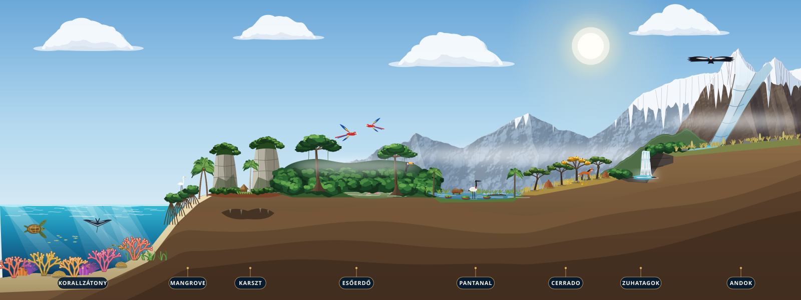
Tenger és karsztAlapítva 1999
Waikiki tartomány: zátonyok, mangrovék és mogoték
A Kuba, Hispaniola, Jamaica és a Nova Aurelia szigetvilága körül elterülő tartomány korallzátonyokat, vörös mangrove-bölcsődéket, látványos karszttornyokat, hiperszalin hasadéktavakat és a Selena Biolumineszcens Lagúnát öleli fel.
480+Élő korallfaj
100%Elektromos hajózás
32Világító öböl
Lombkorona és ártérUnió 2006
Amazónia tartomány: esőerdő, várzea és Pantanal
A 2006-ban csatlakozott Amazónia a Föld legnagyobb összefüggő esőerdejét, a Pantanal vizes élőhelyeit és a part menti dűnelagúnákat oltalmazza. A tartomány területének több mint 80 százalékát szigorú alkotmányos érintetlenségi paktum védi.
5 200 000 km²Védett erdő
80%Érintetlen mag
1 240Madárfaj
Szavanna és AndokUnió 2006
Brazília tartomány: Cerrado, köderdők és csúcsok
Az aranyló Cerrado-fennsíkoktól és a száraz Caatinga kaktuszerdőitől a bazalt vízeséseken át a magashegyi andoki csúcsokig húzódó tartomány a Monte Cristal orchidea-rezervátumainak és a Waikiki Síparadicsomnak ad otthont.
2 890 mKöderdei gerinc
1 250 kmAlpesi sípálya
140+Védett zuhatag
A Kék Öv és a királyi tengeri rezervátumok
A Chease Young király által a COP26 klímacsúcson kezdeményezett Kék Öv Egyezmény több mint kétmillió négyzetkilométernyi karibi és atlanti felségvizet véd. Ahol a vörös mangrovék támasztógyökerei találkoznak a külső korallfallal, zátonyhalak ivadékai nevelkednek a korallkertek fölött.
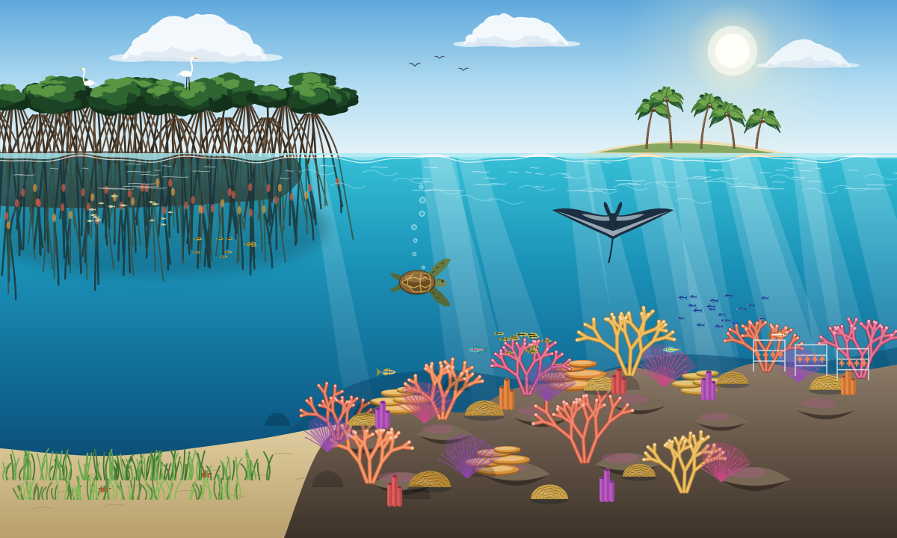
Mangrove-bölcsődék és élő korallfalak
Waikiki part menti bioszférája összefüggő tengeri bölcsődeként működik: a vörös mangrovékkal szegélyezett lagúnák természetes szűrőként tisztítják meg a szárazföldi vizeket, mielőtt azok elérnék a Jardines de la Reina és Nova Aurelia élő korallzátonyait, ahol levesteknősök, sasráják és óriás ördögráják találnak háborítatlan menedéket.
Jessica királyné korallkertje: Víz alatti tartókereteken évente 300 000 hőtűrő agancs- és agykorall-telepet nevelnek, majd telepítenek át a sekély zátonyteraszokra.
Bahía Serena mangrove-öv: A szigorúan védett árapályerdők a papagájhalak, a doktorhalak és a karibi languszták legfontosabb ívó- és nevelőhelyei.
Selena Éjszakai Lagúna: A Fehér Flotta által felügyelt, kizárólag csendes, átlátszó kajakokkal látogatható öböl minden holdtalan éjszakán varázslatos, kékeszöld biolumineszcens fényárban pompázik.
Az amazóniai lombkorona és a Chease Magbank
Az elárasztott várzea folyóágaitól a hatvan méter magas óriásfák lombkoronájáig rétegződő Amazónia tartomány a Föld ismert szárazföldi fajainak mintegy egytizedét őrzi, föld alatti magbankkal és műholdas akusztikus védelmi hálózattal felvértezve.
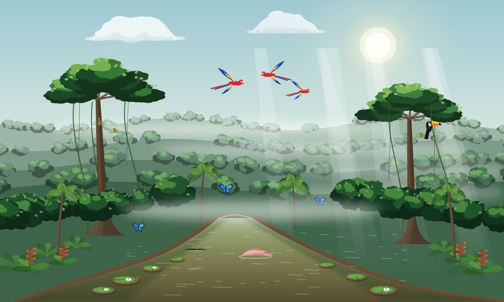
Az élő esőerdő öt függőleges szintje
A Rio Esmeralda kanyargó mellékágain kétméteres Victoria amazonica tündérrózsák lebegnek a nyugodt holtágakon, ahol rózsaszín folyami delfinek bukkannak a felszínre skarlát arák, óriástukánok és színpompás morpho-pillangók alatt. A gránit alapkőzet mélyén húzódik a Nemzeti Genetikai Bárka.
Nemzeti Genetikai Bárka: A kriogén gránitkamrák több mint 100 000 honos neotrópusi magfajtát és szövetkultúrát őriznek mínusz 196 Celsius-fokon.
A 80%-os érintetlenségi paktum: Négymillió négyzetkilométernyi elsődleges terra firme és várzea őserdő teljes alkotmányos védettséget élvez: a terület elzárt minden fakitermelés, bányászat és útépítés elől.
Orion-4 akusztikus őrszem: A Waikiki Űrügynökség műholdjai és a lombkoronába telepített napelemes szenzorok valós időben mérik be az illegális emberi jelenlét zajait, hatvan másodpercen belül riasztva a járőröző vadőri léghajókat.
Brazília hegyvidéke, köderdei és gleccserei
Ahol a meleg atlanti légtömegek találkoznak a déli hegyvonulatokkal, Brazília páfrányokkal borított köderdőkön és magashegyi páramo fennsíkokon át emelkedik az örök hómezők és türkizkék gleccsertavak világába.
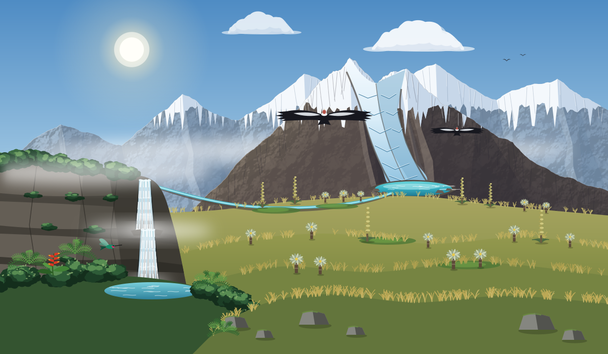
A páramo üstökösfáktól az örök jégig
A Monte Cristal 2800 méteres felhőhatára felett a mohával borított köderdőket aranyló páramo füves puszták váltják fel, óriás Puya raimondii virágzatokkal és bársonyos frailejón-rozettákkal. A gleccserek kristálytiszta olvadékvize egyszerre táplálja a Waikiki Síparadicsom magaslati tározóit és a Chease Királyi Szőlőbirtokok vulkanikus teraszait.
Andoki kondor rezervátum: A gránitkatlanok felszálló légáramlatai a kontinens legnagyobb védett andoki kondor fészkelőállományának biztosítanak ideális feltételeket.
Monte Cristal köderdei vízesések: Több mint 140 magaslati zuhatag zúdul smaragdzöld sziklamedencékbe, páfrányfák és 650 honos orchideafaj gyűrűjében.
Gleccservízgyűjtő egyezmény: A zárt olvadékvíz-tározók kizárólag megújuló hidrotermikus energiával látják el a magaslati kutatóállomásokat és a modern felvonórendszereket.
Különleges életközösségek és nemzeti rezervátumok
A korallzátonyokon, síkvidéki esőerdőkön és alpesi csúcsokon túl Waikiki tizenkét egyedülálló regionális ökoszisztémát is oltalmába fogad. Válasszon az alábbi tartományi szűrők közül az egyes rezervátumok élővilágának és a Waikiki One rendszer látogatói kereteinek megismeréséhez.
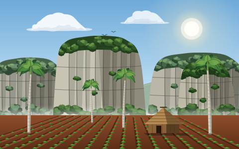
Waikiki tartományKarsztvölgy
Viñales karszt mogote rezervátum
A vörös talajú völgyekből függőlegesen kiemelkedő jura kori mészkőtornyok vidéke: királypálma-ligetekkel, hagyományos dohányszárító pajtákkal és föld alatti barlangi folyókkal.
420 mKarsztkúpok
KirálypálmaVezérnövény
180 / napÖsvénykvóta
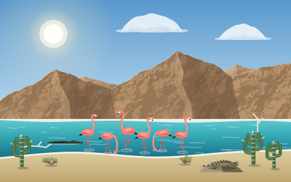
Waikiki tartománySós hasadéktó
Lago Enriquillo medence rezervátum
Negyvenöt méterrel a tengerszint alatt fekvő hiperszalin tektonikus tó, amely karibi flamingócsapatoknak, honos orrszarvúleguánoknak és hegyesorrú krokodiloknak nyújt menedéket.
-45 mTengerszint alatt
FlamingóVezérfaj
90 / napHajókvóta
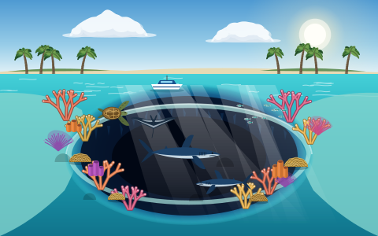
Waikiki tartományTengeri szakadék
Selena Kék Szakadék víznyelő
Szabályos kör alakú tengeri víznyelő, amely 202 méteres mélységbe zuhan a mészkőtalapzatban, sekély, napfényes korallkertekkel, tengeri teknősökkel és szirti cápákkal övezve.
202 mMélység
Szirti cápaVezérfaj
40 / napMerülési kvóta
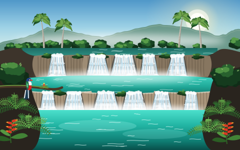
Waikiki tartományMésztufa vízesés
El Nicho mésztufa-vízesések
Lépcsőzetes mésztufa-medencék és kristálytiszta vízesések az Escambray-hegység köderdejében, óriás páfrányfák, vadon nyíló orchideák és honos kubai trogonok árnyékában.
820 mHegyi magasság
Kubai trogonEndemikus madár
110 / napMedencekvóta
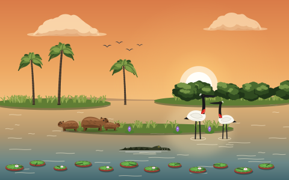
Amazónia tartományÁrtéri mocsár
Pantanal birodalmi vizes élőhely
A világ legnagyobb trópusi ártéri síksága az évszakos áradások ritmusában telik meg sekély tükörlagúnákkal, jabiru gólyák, vízidisznók, kajmánok és jaguárok élőhelyeként.
195 000 km²Ártér
Jabiru gólyaVezérfaj
E-csónakKözlekedés
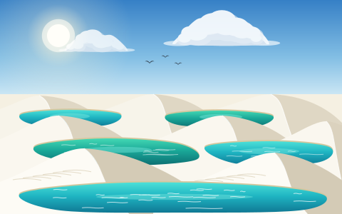
Amazónia tartományDűnelagúnák
Lençóis kvarcdűne-lagúnák
A keleti tengerpart mentén húzódó hófehér kvarchomok-dűnék mélyedéseit az esős évszakban kristálytiszta, türkizkék édesvizű esővíz-lagúnák ezrei töltik meg.
1 550 km²Dűnemező
EsőlagúnákVízrajz
120 / napGyalogos kvóta
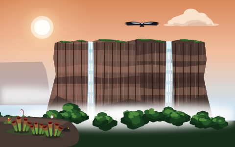
Amazónia tartományHomokkő táblás hegy
Roraima táblás hegyvidék
Rózsaszínes kvarcit sziklafalak, amelyek 1000 méterrel emelkednek az esőerdő lombkoronája fölé, ősi kőfennsíkkal, húsevő kürtvirágokkal és mélybe zúduló zuhatagokkal.
2 810 mFennsík csúcs
KürtvirágEndemikus flóra
50 / napTúrakvóta
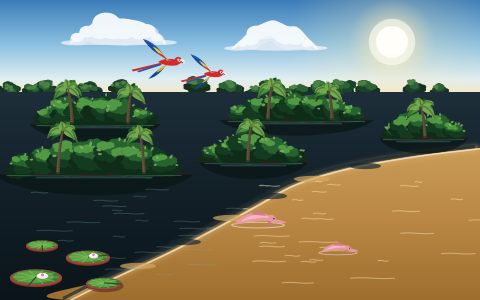
Amazónia tartományFolyami szigetvilág
Anavilhanas és Encontro vizek
Négyszáz smaragdzöld ártéri sziget hálózza be a Rio Negro sötét tükörcsatornáit a legendás folyamtalálkozás felett, ahol a fekete és az okkersárga víztömegek keveredés nélkül folynak egymás mellett.
400 szigetÁrtéri labirintus
Folyami delfinVezérfaj
75 / napKajakkvóta
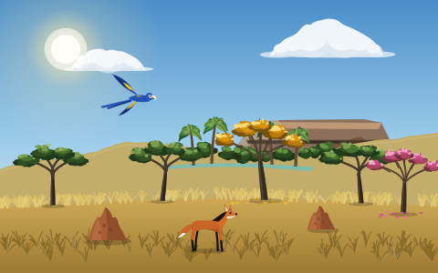
Brazília tartományFennsíki szavanna
Cerrado birodalmi szavanna
Göcsörtös, tűzálló fákkal, arany- és bíborvirágú ipéligetekkel és vörös termeszvárakkal tarkított fennsík, a jácintarák és a hosszú lábú sörényes farkasok otthona.
950 000 haVédett fennsík
Sörényes farkasVezérfaj
Vezetett szafariEngedély
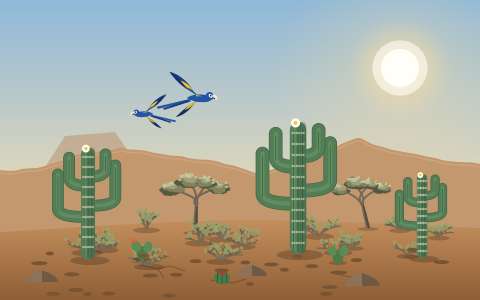
Brazília tartománySzáraz tüskeerdő
Caatinga fehérerdő rezervátum
Ezüstös kérgű lombhullató fákkal és oszlopos mandacaru kaktuszokkal borított félszáraz tüskeerdő, amely az esők után smaragdzöldbe borul, és ritka kék arákat oltalmaz.
840 000 haSzáraz rezervátum
Kék araVisszatelepített
60 / napKutatói kvóta
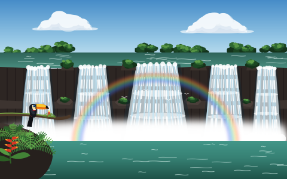
Brazília tartományBazalt zuhatag
Rio Esmeralda óriás vízesések
Patkó alakú természeti amfiteátrum, ahol többlépcsős vízesések zúdulnak le a sötét vulkanikus bazalton a smaragdzöld szurdokba, örök szivárványok és páfrányfák ölelésében.
180 mZuhanási magasság
SzivárványKödpermet
250 / napSétánykvóta
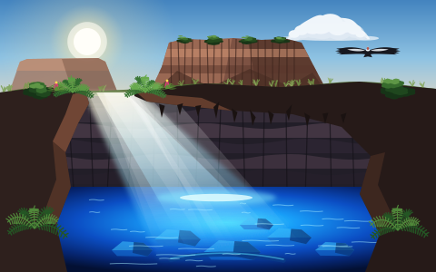
Brazília tartományTáblás hegy és barlang
Chapada Diamantina kristálybarlang
Szélformálta homokkő táblahegyek és mély kvarcitbarlangok, ahol a beszűrődő napsugár ragyogó kobaltkék fénybe borítja a földalatti Poço Encantado kristálytiszta vizét.
1 120 mPai Inácio-hegy
Kobaltkék tóBarlangi medence
65 / napBarlangkvóta
A Nemzeti Zöld Karta
Waikiki jogrendszerében a természetes ökoszisztémák alkotmányos védelemmel felvértezett jogi személyiséggel bírnak. Minden állampolgárnak és külföldi látogatónak kötelező betartania a Nemzeti Zöld Karta négy alapelvét.
1
Waikiki One biometrikus engedélyek
A védett övezetekbe történő belépés előzetes digitális engedélyhez kötött a Waikiki One rendszerben. A napi keretszámot valós időben határozza meg a mesterséges intelligencia a talajnedvességi és fészkelési adatok alapján.
2
100% csendes hidrogén és elektromos közlekedés
A rezervátumokban és a vizeken tilos belső égésű motorok üzemeltetése. A közlekedés kizárólag napelemes léghajókkal, csendes maglev vonatokkal és elektromos katamaránokkal engedélyezett.
3
Egyszer használatos műanyagok importtilalma
A határállomásokon és kikötőkben 2015 óta szigorú behozatali tilalom érvényes a nem lebomló csomagolásokra. Minden utazási eszköz és csomagolás kizárólag tanúsítottan lebomló bambuszból és cellulózalapú bio-polimerekből készülhet.
4
Nemzeti Vagyonalap újrabefektetés
A nemzeti parki belépőkből befolyó minden egyes dollár közvetlenül a Nemzeti Vagyonalap Ökológiai Helyreállítási Alapjába kerül, finanszírozva az élő korallkertek telepítését és az őshonos erdők regenerációját.